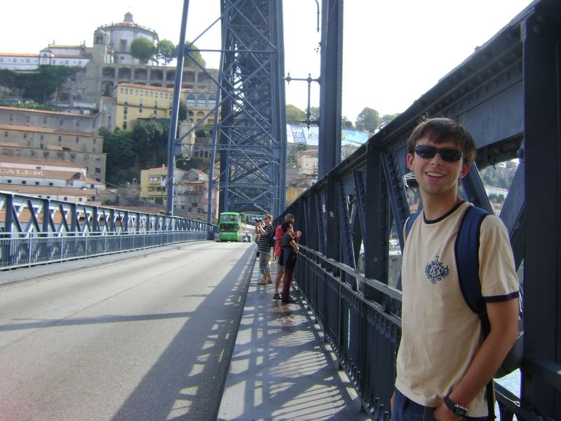
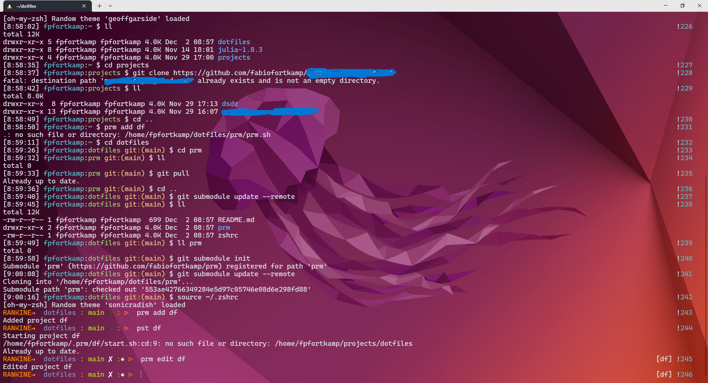
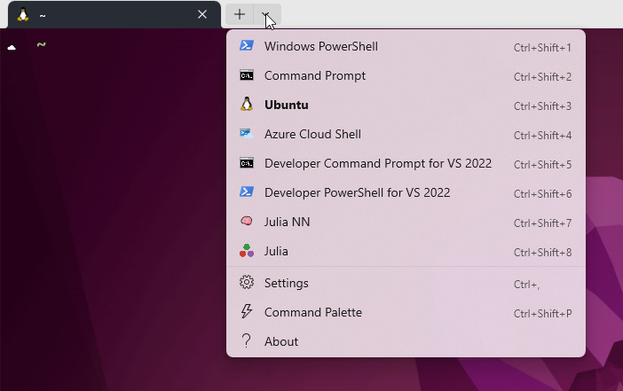
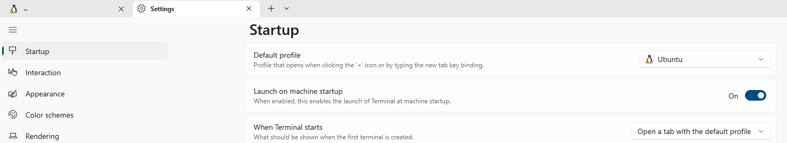

A little bit of backstory
In the academic year of 2009-2010, I went to the University of Porto to spend a semester abroad:

This was life-changing in several ways. It was the first time I left my family home (since I went to university in my home town), and it was in a different country! I met a lot of people, made several friends, had the privilege of traveling around Europe being only 21, and grew up as a person.
Of course, academically, I also learned a lot. But I had a small problem: I was too far advanced in my Mechanical Engineering curriculum here in Brazil, and I had few options of courses to take in Portugal. This became even harder in the second semester, which led me to the decision of taking Computer Engineering courses to achieve the required number of hours in the classroom.
And then I, a Mechanical Engineer student, took classes on Computer Graphics, Operating Systems, Databases. This experience made me the Mechanical Engineer I am today.
What is my job title anyway?
When I returned to Brazil, I was ruined. All I could think of was programming, and serious programming, not the sub par classes I had to take in the first years of college. Back in my home university, I took courses in numerical heat transfer, numerical structural analysis, computer-aided manufacturing. I began developing User-Defined Functions in Fluent in the C programming language (good times).
Before graduating, I took an internship position at KIT. I worked in a project that involved the refrigeration industry, but… as a developer, I guess? I spent all days in the VBA (Visual Basic for Applications) editor, implementing models for compressors, valves, heat exchangers, fluid properties – and all inside Excel, so that engineers and managers could do their thing without having to open Matlab, or Python, and any code editor.
Quick: was I a Mechanical Engineer, or a Software Developer?
Where does Linux goes into this post?
I reminded of all this because, currently, this is what I get to see in front of me almost every day:

I again face the question from above: I spend my days implementing models for heat transfer and fluid flow processes – am I an Engineer or a Developer?
My main function in my current job is developing (proprietary) Python software. This is the most complex code I’ve ever worked with, and I have to deal with collaborating with other people with Git, keeping track of Python versions (and Python packages versions), debugging, testing. I’m also writing reports in Quarto, and beginning to study some Julia (more on this in a later post). These are all related to Mechanical Engineering, and involve serious programming tasks, and this requires serious programming tools.
I’m not saying that you can’t do serious development in Windows – I’ve done that my whole career. But I was trained to be a programmer in Linux, while taking all those Computer Engineering classes in Portugal. My assignments were to work with a terminal app (like the one you see above), type commands in it and then write code in a text editor. After learning Linux at U. Porto, I couldn’t go back to the Command Prompt in Windows. In later years, I tried out Cygwin and Git Bash, but these were more hacks than anything else and problems always appeared. For instance, you can indeed have a great terminal experience (I even wrote my own configuration scripts for using terminals in Windows), but basic tools like make aren’t included. I love working with VS Code, and it doesn’t integrate well with either Cygwin or Git Bash.
So I decided to try out the Windows Subsystem for Linux (WSL), which allows me to use Windows apps but with the Linux command line and tools. I should have just learned Powershell, but here we are.
By the way: if you getting more serious into programming tasks in Windows, you should check out Scott Hanselman’s blog. He writes a lot about Windows apps and tools — while also recommending WSL.
How to configure it
Installation
So what is WSL? Basically, it’s a different interface with your Windows PC.
After installing it, what you get is a virtual machine that is running a version of Linux. I went with the default options: I’m running Ubuntu – maybe you can see that I even used the official wallpaper from the current (22.04) Long-Term-Support (LTS) distribution, Jammy Jellyfish. By the way: I’m running the Windows Terminal Preview, a very modern terminal app. If you install WSL and this app, a profile will be created, and you can select it when opening a new tab:

I’ve set up Windows Terminal so that the Ubuntu profile is the default one, and also set it to open automatically at startup:

And with this script (for AutoHotkey), which is also in my Startup folder, I set up the keystroke Ctrl-Shit-Alt-I to toggle opening and hiding the terminal.
Getting around the command line
With WSL, you don’t get a full Linux distribution, which its own graphical user interface – you only have the command line, so it’s essential to use it well.
When I was learning Linux, The Linux Command Line by William Shots was an essential reference - and it’s free! I highly recommend it as a first step.
I’ve taken one step further from the book above, which uses the bash shell, and set zsh as my default system. Here’s my current configuration, which uses oh-my-zsh. Being able to do these sorts of customizations is the main point of using Linux on Windows.
Accessing Windows programs
The beauty of WSL is that it can be thought of as just an interface. For instance, as I said above, I use VS Code, and I downloaded it and installed it as a regular Windows program, and it is in my PATH environment variable set in Windows. But in WSL, if I type code, it opens the Windows VS Code app – it knows there to look at! In the WSL shell, (you navigate the Linux virtual machine directories, as well as the native Windows folder).
But again, what does it have to do with Engineering?
It all comes back to being more efficient at using Windows for software development. Right now I’m working on a paper that involves running multiple Python scripts and rendering markdown and LaTeX documents. The process of easily generating the final manuscript is completely automated (ask me how), and I can use the full power of “the command line” to interweave various commands and tasks.
So yes: I’m a Mechanical Engineer, and Linux, Python, Julia, the terminal etc are tools to do engineering research, and an engineer has to know his tools.
What does not work so far
There are some hiccups. This is a virtual machine, so it has limited memory. Compiling some Julia libraries proved impossible, so for now I’m not using WSL for that (like I said, more on this later). I would really like to fix that.
It was also not trivial to install different Python versions for my different projects, but this guide was very helpful.
Only two drawbacks? Yes, I am very happy with this experience. Surprisingly, my 3-year old son also is, because when he comes to my home office I’m usually researching Linux things, and he loves seeing Tux in my computer screen.
I began this post with a picture of my 21-year old self, and finished talking about my first-born, while talking about Linux in the middle. I think that’s all for today.